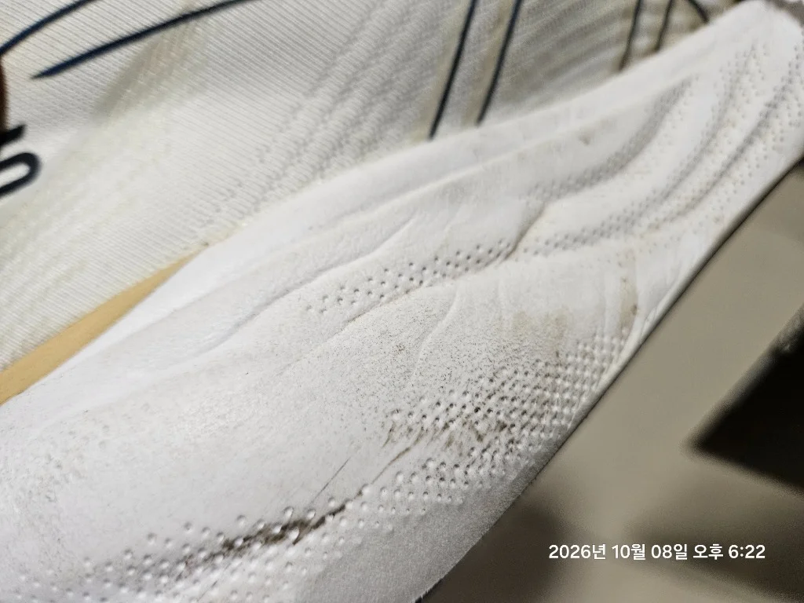
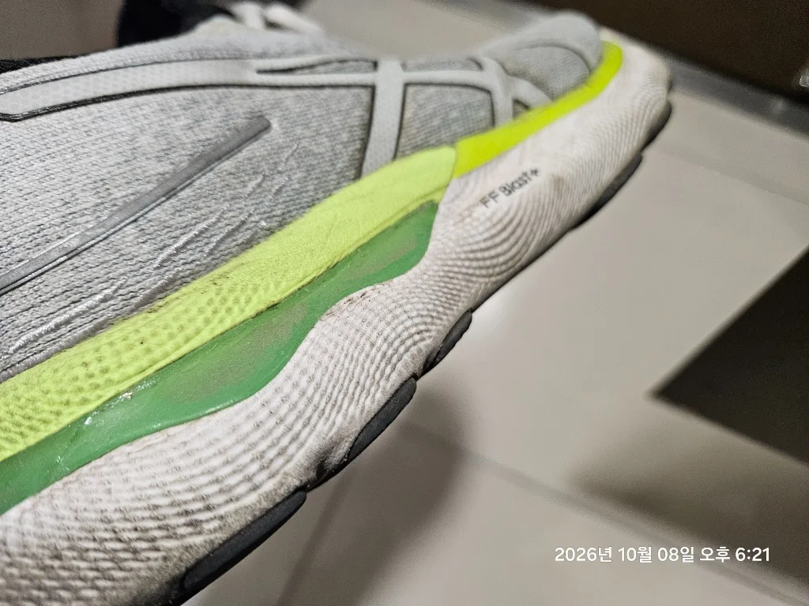

런리핏(RunRepeat.com)은 협찬을 받지 않고 시중의 러닝화를 직접 사서 톱으로 반으로 자른 뒤, 내부 구조를 30가지 넘게 직접 재는 독립 실험실입니다. 제조사가 적어 놓은 수치와 실제 신발 사이의 차이를 정확하게 밝혀내는 곳으로 유명합니다.
1. 왜 브랜드 공식 수치 대신 '실측 데이터'를 봐야 할까요?
러너들이 신발을 사고 실망하는 가장 큰 이유는 홈페이지에 적힌 숫자와 실제 착용감이 다르기 때문입니다. 대표적인 예가 깔창 두께를 포함해서 재는지 빼고 재는지의 차이입니다.
공식 규정상으로는 깔창까지 포함해 뒤꿈치 높이를 재야 하지만, 많은 브랜드가 깔창을 빼고 재거나 오차를 알리지 않습니다. 그래서 공식 설명에는 뒤꿈치와 앞꿈치 높이 차이가 8mm라고 적혀 있어도, 실제로 잘라서 재 보면 11.2mm가 나오거나 5.8mm밖에 안 되는 경우가 흔합니다.
겨우 3mm 차이만 나도 땅을 디딜 때 무릎에 실리는 힘과 아킬레스건에 걸리는 부담이 크게 달라집니다. 그래서 내 관절을 지키려면 광고 문구보다 직접 잰 숫자를 볼 줄 알아야 합니다.
2. 뒤꿈치-앞꿈치 높이 차이(드롭): 어디가 아픈지 결정하는 각도
드롭이란 신발의 뒤꿈치 밑창 두께에서 앞꿈치 밑창 두께를 뺀 높이 차이입니다. 쉽게 말해 러닝화 바닥의 기울기입니다.
- 높은 드롭 (8mm ~ 12mm): 뒤꿈치가 높게 올라가 있어 발목이 덜 꺾입니다. 뒤꿈치부터 땅에 닿는 분에게 편하며, 종아리와 아킬레스건의 부담을 줄여 주는 대신 무릎 쪽으로 힘을 나눕니다. 평소 아킬레스건이나 발바닥이 자주 아픈 분께 좋습니다.
- 중간 드롭 (5mm ~ 7mm): 발 중간으로 자연스럽게 딛기 좋은 가장 무난한 높이 차이입니다.
- 낮은 드롭 / 제로 드롭 (0mm ~ 4mm): 맨발에 가까운 평평한 각도로 발 앞쪽이 먼저 닿게 만듭니다. 무릎 충격은 줄여 주지만, 종아리와 아킬레스건이 훨씬 많이 늘어납니다. 준비가 안 된 초보자가 갑자기 신으면 아킬레스건이 다치기 쉽습니다.
| 1. 실제 무게 | 270mm 기준 200g 이하는 기록용, 250~290g은 평소 연습용 쿠션화 |
|---|---|
| 2. 뒤꿈치-앞꿈치 높이 차이 | 발목·아킬레스건 보호(8~12mm) vs 무릎 부담 줄이기(0~4mm) |
| 3. 뒤꿈치 밑창 두께 | 바닥 총 두께. 35mm 이상은 두꺼운 맥스 쿠션화, 대회 규정 한계 40mm |
| 4. 쿠션 딱딱함 (HA) | 15~20 HA는 푹신하고 말랑함, 25 HA 이상은 단단하고 튕겨 줌 |
| 5. 신발 굽힘 강도 | 신발을 꺾을 때 드는 힘(N). 카본화는 40~60N으로 뻣뻣, 일반화는 20N 안팎 |
3. 두꺼운 밑창 쿠션화의 좋은 점과 주의할 점
요즘 유행하는 바닥 두께 38~40mm의 아주 두꺼운 쿠션화는 땅의 충격을 부드럽게 막아 주지만, 자동차로 치면 바퀴가 높아진 SUV와 비슷합니다.
발바닥이 땅에서 멀어질수록 착지할 때 발목이 좌우로 기우뚱거리기 쉬워집니다. 발목 힘이 약한 초보자가 너무 두껍고 말랑한 신발을 신으면 발목이 안쪽으로 꺾이면서 정강이나 무릎 바깥쪽이 아플 수 있습니다.
4. 쿠션의 딱딱한 정도(HA): 푹신함과 탄성의 균형
런리핏에서는 경도 측정기로 쿠션이 얼마나 말랑하거나 단단한지 재서 'HA'라는 숫자로 보여 줍니다.
- 매우 푹신함 (10 ~ 18 HA): 구름 위를 걷는 것처럼 부드럽지만 발이 너무 푹 빠져서 속도를 낼 때 다리가 무거워질 수 있습니다.
- 적당한 균형 (19 ~ 25 HA): 충격을 잘 흡수하면서도 적당히 밀어 주어 매일 신는 연습용으로 가장 좋습니다.
- 단단한 탄성 (26 HA 이상): 푹신하진 않지만 발을 딛자마자 땅을 힘 있게 차고 나가는 기록용 신발에 많습니다.
특히 런리핏은 신발을 영하 20도 냉동고에 20분 넣었다가 꺼낸 뒤 쿠션이 얼마나 딱딱해지는지도 잽니다. 오래된 일반 스펀지 소재는 겨울에 40~50%나 딱딱해져 돌덩이처럼 굳지만, 최신 고급 폼 소재는 추워져도 10% 이내로만 변해 사계절 내내 비슷한 쿠션을 지켜 줍니다.
아래 두 장의 사진은 제가 수천 km를 달리며 겪은 쿠션 상태와 신발 구매의 아픈 경험입니다. 오픈마켓 일반 판매자에게 샀던 젤님버스 24(첫 번째 사진)는 겉보기엔 멀쩡해 보였지만 실제 달려 보니 쿠션이 비정상적으로 푹 꺼지고 반발력이 뒤틀려 결국 제대로 신지 못했습니다. 이후 러닝화는 반드시 백화점이나 공식 판매처에서만 산다는 원칙을 세웠습니다. 반면 러닝화 전문 매장인 플릿러너에서 발 모양을 직접 재고 샀던 젤님버스 23(두 번째 사진)은 오랜 거리를 달린 지금까지도 발에 착 감기는 편안함을 유지하고 있습니다. 아무리 좋은 스펙의 신발이라도 정품의 정상적인 쿠션 상태가 지켜지지 않으면 오히려 관절을 다치게 할 수 있습니다.


- 내 달리기 습관과 통증 부위에 맞는 신발을 정확히 고를 수 있음
- 겨울철 추위에도 딱딱해지지 않는 좋은 쿠션 소재 구별 가능
- 무릎이 아픈 사람과 아킬레스건이 아픈 사람에게 딱 맞는 선택 가능
- 쿠션이 두꺼울수록 무조건 안전할 거라는 착각 (발목 흔들림 주의)
- 선수들이 신는 딱딱한 카본화를 초보자 조깅용으로 구매
- 발볼 넓이 수치를 안 보고 평소 신던 발 길이 사이즈만 고집
"아픈 부위에 따라 신발 숫자를 반대로 골라 보세요."
• 무릎이 시큰거리는 러너: 드롭 8~10mm, 적당히 탄탄한 쿠션(20~23 HA) 선택
• 종아리·아킬레스건이 뻐근한 러너: 뒤꿈치가 높은 10~12mm 드롭 추천, 평평한 신발이나 카본화는 피하기
• 대회 기록 단축용 러너: 무게 200g 미만, 가볍고 탄성 좋은 최신 폼, 반발력 있는 카본화 선택
실측 검사에서 내구성과 수치 정확도가 높게 나온 스테디셀러 러닝화 정보를 확인해 보세요.
참고 문헌 및 랩 출처
- RunRepeat Laboratory Testing Methodology (2024). Shoe Lab Cutting and Measurement Protocols. https://runrepeat.com/
- Malisoux, L., et al. (2016). Influence of the heel-to-toe drop of standard cushioned running shoes on injury risk in leisure-time runners. The American Journal of Sports Medicine, 44(11), 2933-2940.
- Relph, N., et al. (2022). Effects of minimalist and maximalist footwear on running biomechanics. Sports Biomechanics, 21(3), 320-335.